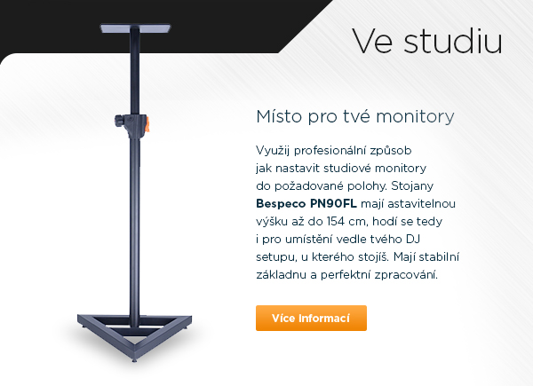
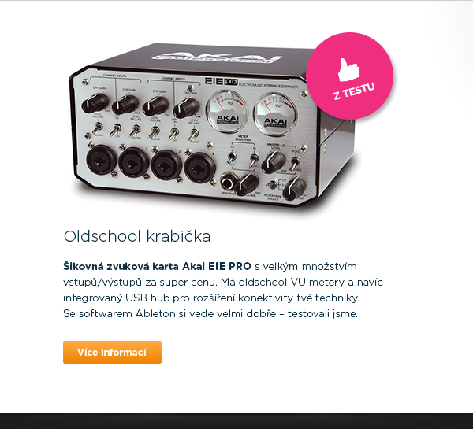
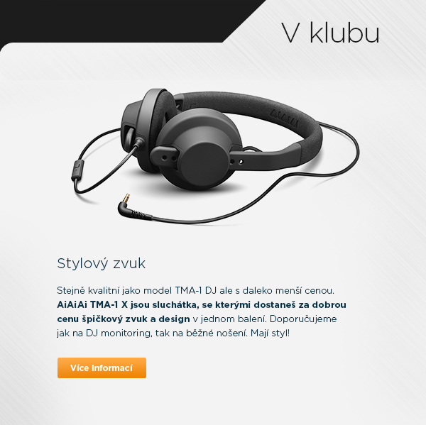
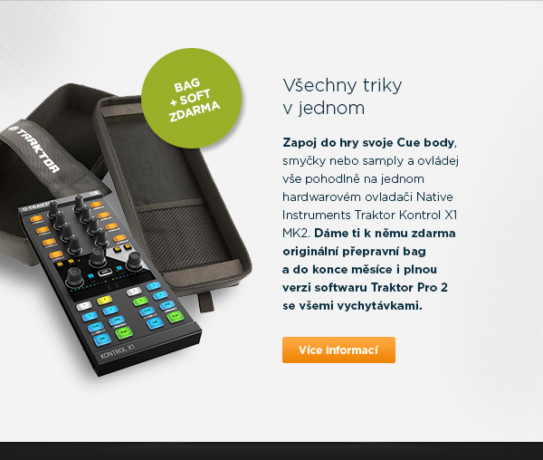
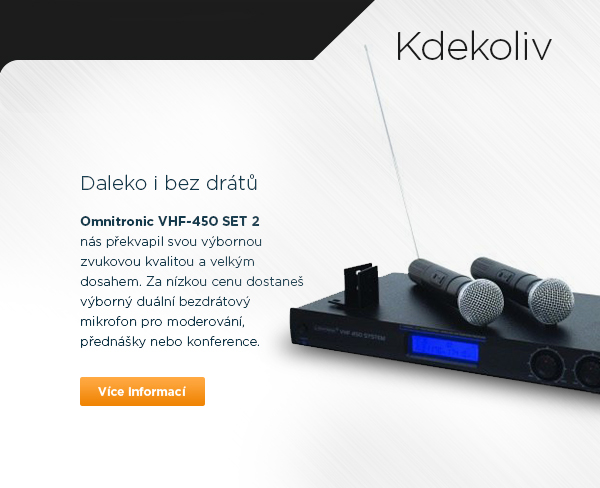
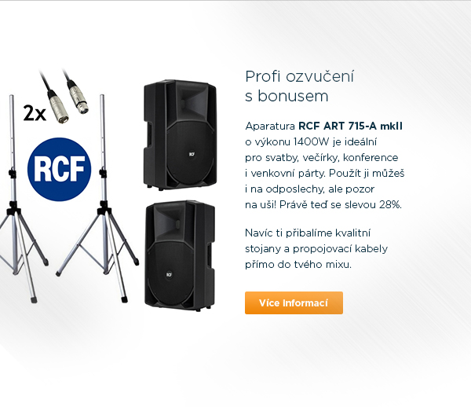

Vybrali jsme pro tebe tu nejlepší a nejoblíbenější techniku za super ceny.
Nezobrazuje se ti náš newsletter správně?
Klikni zde
.






Pokud nechceš nadále dostávat náš newsletter pro profíky, jednoduše se můžeš odhlásit
zde
.